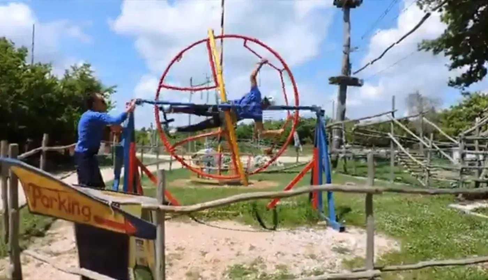
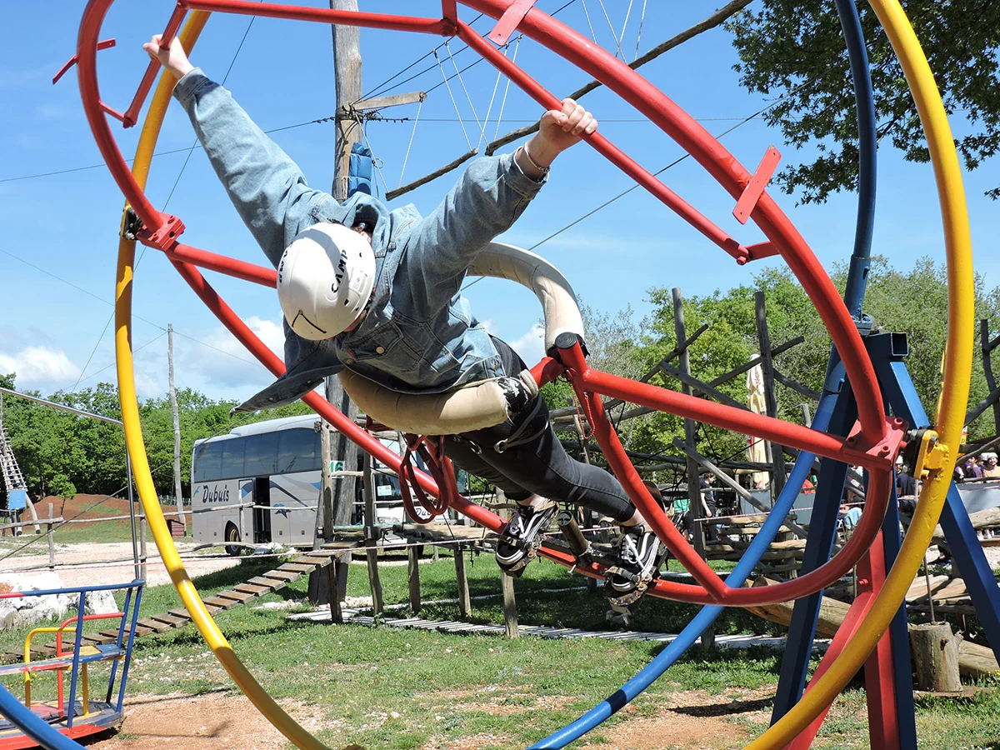
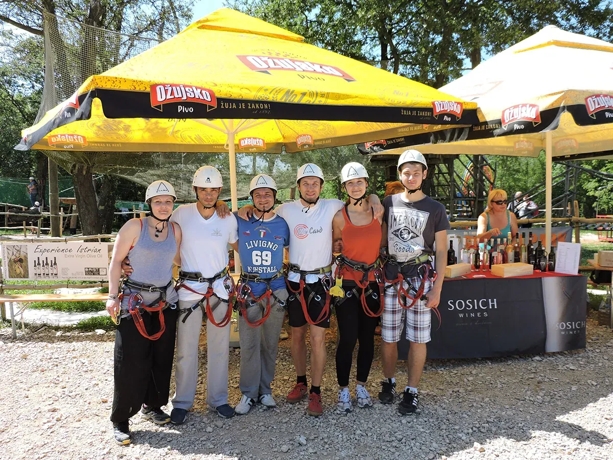

Zavežite se u Aerotrim Glavani Parka — ljudski žiroskop koji vas okreće u više osi dok ste sigurno pričvršćeni u okviru. Osoblje određuje tempo, objašnjava položaj tijela i nadzire svaku vožnju u šumskoj čistini.
Jedinstven je spoj adrenalina i dezorijentacije — popularan među tinejdžerima i odraslima koji žele nešto drugačije od ziplinea i katapulata. Primjenjuju se ograničenja visine, dobi i zdravlja; pitajte na blagajni prije rezervacije.
Ljudski žiroskop u šumi
Aerotrim vas okreće u više osi dok ste sigurno u okviru — osjećaj drugačiji od svega ostalog u parku. Osoblje kontrolira brzinu i objašnjava položaj tijela. Popularan među tinejdžerima koji traže nešto izvan ziplinea i katapulata.
Primjenjuju se zdravstvena, visinska i dobna ograničenja. Ako ste osjetljivi na kretanje, pogledajte sesiju ili napravite pauzu uz osvježenje između vožnji.
Planiranje posjeta
Glavani Park se nalazi u Glavanima 10, Barban — otprilike 30 minuta vožnje od Pule, 45 minuta od Rovinja i Rabca te 50 minuta od Poreča. Besplatno parkiranje je na licu mjesta. Park radi svaki dan 9–17 h; posljednji ulaz u 15 h, stoga planirajte tri do četiri sata za cijeli park.
Za aerotrim i ostale atrakcije možete rezervirati ulaznice online za grupe do 10 osoba ili nazvati za veće grupe. Pogledajte pakete i cijene — cijeli park od 70 € po osobi, pojedinačne aktivnosti od 30 €.
Sigurnost i oprema
Svaka aktivnost u Glavani Parku vodi se pod nadzorom kvalificiranih instruktora. Oprema je CE certificirana i provjerava se dnevno. Prije početka dobivate harnes, kacigu i jasnu obuku. Više o standardima pročitajte na našoj stranici o sigurnosti.
Paketi od €30 po osobi · online do 10 osoba
Fotografije posjetitelja — Aerotrim

